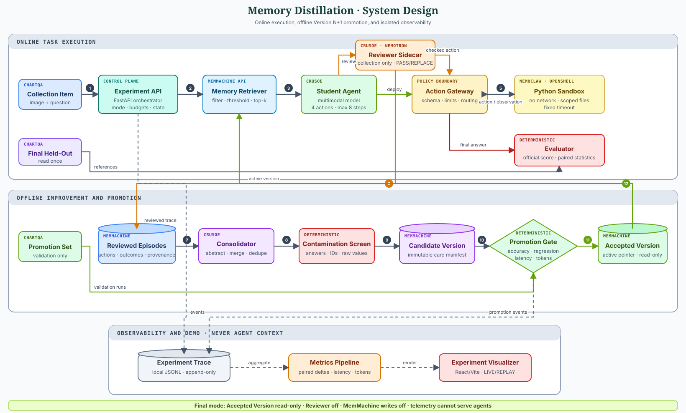

The product
An agent team that proposes changes to its own reusable procedures and must earn promotion through controlled validation.
A Nemotron reviewer repairs a smaller visual agent. A Consolidator turns repeated repairs into answer-free Behavior Cards in MemMachine. A promotion gate keeps only versions that measurably help.
The required build uses one benchmark, four experimental conditions, one operational memory, and one automatic version gate. MathVista, raw-episode retrieval, and weight updates are stretch work.
An agent team that proposes changes to its own reusable procedures and must earn promotion through controlled validation.
A fresh Student uses an Accepted Version from MemMachine on unseen tasks while the Reviewer is absent and memory writes are disabled.
The system does not keep every generated memory. It proposes, measures, promotes, rejects, and rolls back versions of its operating procedure.
Reviewed failures become candidate procedures. Only a batch that passes capability and efficiency gates becomes the next Accepted Version.
MemMachine carries Reviewed Episodes, Behavior Cards, provenance, and version state across roles and fresh Student sessions.
The team defines completion through executable gates. It can reject harmful self-modification and stop without asking a human to curate results.
Harness-Zero supplies the response-boundary supervision pattern. This proposal changes the transfer medium, modality, update lifecycle, and deployment tradeoff.
| Dimension | Harness-Zero | Memory Distillation |
|---|---|---|
| Transfer target | Fine-tuned parameters | Versioned Behavior Cards in MemMachine |
| Domain | Tool and application environments | Multimodal chart reasoning |
| Change cost | Collect and train again | Validate, promote, reject, or roll back a memory version |
| Inspection | Behavior is implicit | Every procedure has fields, evidence, provenance, and status |
| Deployment cost | No retrieval dependency | Retrieval and context cost, measured explicitly |
a4a6223. We may adapt its PASS/REPLACE contracts, response-boundary supervision, and H-star-to-Kappa mapping ideas with attribution. We explicitly exclude Harbor, DeepAgents, SFT, benchmark banks, and its single-execute runtime.An Accepted Version will improve paired ChartQA accuracy over the minimal baseline while using fewer calls, tokens, or latency than online Reviewer guidance.
The claim fails if memory does not improve accuracy, trigger-irrelevant memory performs similarly, or gains require raw episodes, human curation, or leaked answers.
The build never changes its meaning when account-specific model IDs differ. A smoke test chooses endpoints against explicit capability contracts.
The smallest available Crusoe multimodal model with measurable ChartQA headroom. It acts through the fixed minimal harness.
A Crusoe-hosted Nemotron multimodal model. It consumes frozen Kappa Guidance and accepts or minimally replaces each proposed Student action.
An available Crusoe text model selected for schema reliability. It converts repeated corrections into candidate procedures.
Deterministic code compares candidate and accepted versions. It—not an LLM or human—makes the promotion decision.
Official ChartQA normalization plus paired statistical analysis. It never writes memory or supplies task answers.
An optional calibration-only model may propose one bounded H-star revision. Its endpoint is discovered at the provider gate; regression evidence decides acceptance.
H is the fixed Minimal Harness. H-star is a calibration-only optimized reference. Kappa Guidance is the frozen, answer-free artifact adapted from H-star for the Reviewer; Kappa is not a model. The human operator only configures credentials and recovers infrastructure.
run_python action executes inside OpenShell under a NemoClaw-managed sandbox. Network is denied and filesystem access is scoped.Agents never retrieve from local telemetry. A JSONL Experiment Trace exists only for metrics, debugging, and visibly labeled replay.
Collection trajectories, action diffs, tool observations, outcomes, correction reasons, and provenance live in episodic memory.
Structured long-term records contain triggers, procedures, verification steps, failure modes, support, confidence, and version metadata.
Immutable manifests list card IDs. An accepted-version record identifies the only version eligible for Student retrieval.
| Record | Who writes | Who reads | Mutation rule |
|---|---|---|---|
| Reviewed Episode | Collector | Consolidator, visualizer | Append-only |
| Candidate Behavior Card | Consolidator proposes; validator admits | Screening and promotion runs | Immutable after freeze; lifecycle operations are deltas |
| Accepted Version | Promotion Gate | Student retriever | Pointer advances or remains |
| Experiment Trace | Orchestrator | Metrics, debugger, replay | Never agent context |
record_type=behavior_card.ChartQA supplies chart images, human-authored questions, known answers, and official relaxed-accuracy logic. Deterministic manifests prevent membership drift.
Exactly 16. Eight discovery and eight regression items derive H-star and Kappa; they never create Behavior Cards.
Exactly 40. Reviewer-guided episodes may generate one Candidate Version.
Exactly 30. Validation items accept or reject the candidate and never produce memories.
Exactly 60. Untouched items run once after the final Accepted Version is frozen.
Student, minimal harness, no Reviewer, no memory. This establishes the floor.
Reviewer checks every Student action. This estimates transferable benefit and online supervision cost.
Fresh Student, accepted Behavior Cards, Reviewer off, writes off. This is the primary result.
Reviewer off. A predeclared donor pool supplies trigger-mismatched accepted cards, matching C2 card count exactly and token count within 10%.
20261016 before final access. After loading answer-free final task inputs, materialize assignments deterministically before any condition executes or scoring reference is loaded. Report C3 unavailable when no honest match exists and disclose the eligible paired population. If empty Accepted v000 remains active, C2 collapses to no-memory behavior and C3 is unavailable; this is a degenerate negative result, not evidence for relevance.| Gate | Starting threshold | Failure action |
|---|---|---|
| Paired accuracy | At least +5 percentage points | Reject candidate |
| Negative Transfer | No more than 2 percentage points | Reject candidate |
| Median latency | No more than 15% increase | Reject candidate |
| Median input tokens | No more than 15% increase | Reject candidate |
Run every required condition once with lowest-variance decoding and identical token, tool, and step budgets. Report paired bootstrap intervals and McNemar’s exact test.
If time permits, repeat all required conditions three times on a frozen 20-item subset and report run-to-run variance.
All Student, Reviewer, and Consolidator inference uses Managed Inference. The adapter records endpoint, latency, tokens, retries, and errors.
The required multimodal Reviewer sees the image, state, proposed action, and frozen Kappa Guidance during calibration, measured Collection, and C1 only.
Managed MemMachine stores every Reviewed Episode, Behavior Card, version manifest, and accepted-version pointer used by agents.
NemoClaw manages the sandbox. OpenShell executes generated Python with explicit time, network, filesystem, and resource policy.
| Excluded | Reason | Allowed only as |
|---|---|---|
| Streamlit | Explicit hackathon anti-project and insufficient demo control | Never |
| You.com runtime search | Unnecessary for closed-book ChartQA and a contamination risk | Future live-document task |
| Raw episode retrieval | Would weaken the claim into example retrieval | Optional labeled ablation |
| Human card curation | Would hide the actual improvement mechanism | Inspection only |
| MathVista requirement | Expands integration and evaluation risk | Stretch generalization test |
| LoRA or SFT | Displaces the core memory experiment | Post-hackathon comparison |
| Harness-Zero runtime stack | Harbor, DeepAgents, benchmark banks, and single-execute assumptions conflict with the fixed ChartQA boundaries | Pinned, attributed contract-level reuse only |
A React/Vite interface backed by FastAPI replaces Streamlit. It is a transparent experimental instrument, not a dashboard product.
Chart, question, current action, tool observation, and outcome.
Student proposal beside Reviewer PASS or minimal replacement, with changed fields highlighted.
Episode write, candidate card, provenance, promotion status, and later retrieval.
inspect_image(region?)crop(x0,y0,x1,y1)run_python(code)final_answer(answer)Starting limit: eight total actions and two Python calls per task.
Filter by benchmark, question type, and operation. Use top_k=3. Calibrate one score threshold on Collection data, then freeze it.
If no card passes, use no memory. Never force retrieval.
Task IDs, image IDs, copied questions, answer options, final answers, raw chart values, and evaluation-set provenance.
Any match rejects the entire candidate batch before promotion.
Research and planning snapshot: 16 October 2026. Account-specific product availability must be verified before implementation.